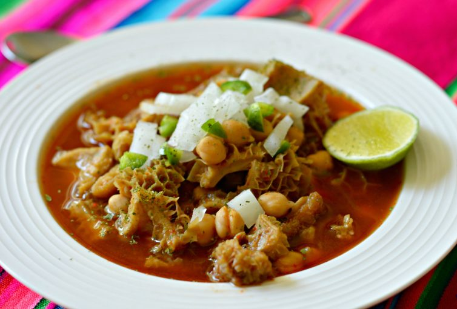

Menudo Recipe

Menudo is the number one on the list of my comfort foods and it’s hard for me to last a month without trying one
Ingredients
- Pork
- Pig liver
- 1 cup potatoes(diced)
- 1 piece carrot(cubed)
- 1/2 cup soy sauce
- 1/2 piece lemon
- 1 peice onion(chopped)
- 3 cloved garlic(minced)
- 1 tbsp sugar
- 3/4 cup tomato sauce
- 1 cup water
- 4 pieces of hotdogs(sliced)
- 2 tbsp cooking oil
- 2 - 3 pieces of dried bay leaves
- salt and pepper to taste
Steps
- Combine pork, soysauce, and lemon in a bowl. Marinate for at least 1 hour.
- Heat oil in a pan
- Saute garlic and onion.
- Add the marinated pork. Cook for 5 to 7 minutes.
- Pour in tomato sauce and water and then add the bay leaves.Let boil and simmer for 30 minutes to an hour depending on the toughness of the pork. Note: Add water as necessary.
- Add-in the liver and hot dogs.Cook for 5 minutes
- Put-in potatoes, carrots, sugar,salt, and pepper. Stir and cook for 8 to 12 minutes.
- Serve. Share and enjoy!